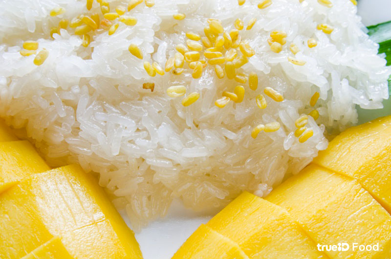

Manatsawee's Recipe
วิธีทำข้าวเหนียวมะม่วง

ส่วนผสม ข้าวเหนียวมะม่วง
- ข้าวเหนียว 350 กรัม
- กะทิ 1 กระป๋อง
- น้ำตาลทราย 3/4 ถ้วย
- เกลือ 1+1/4 ช้อนชา
- แป้งข้าวเจ้า 1 ช้อนชา
- ใบเตย 4-5 ใบ
วิธีทำ ข้าวเหนียวมูน ข้าวเหนียวมะม่วง
- ล้างข้าวเหนียวให้สะอาดแล้วแช่น้ำทิ้งไว้ข้ามคืน
- เติมน้ำลงในซึ้งนึ่ง นำขึ้นตั้งไฟค่อนข้างแรง รอจนน้ำเดือด จากนั้นสะเด็ดน้ำข้าวเหนียวขึ้นมาห่อผ้าขาวบาง วางใบเตยลงไปประมาณ 2 ใบ แล้วนำไปนึ่ง
- นึ่งประมาณ 30 นาทีจนข้าวเหนียวสุก
- นำกะทิมาแบ่งไว้ ¾ ถ้วย สำหรับกะทิส่วนที่เหลือให้นำไปใส่หม้อเล็กๆ เติมน้ำตาลและเกลือ 1 ช้อนชาลงไป จากนั้นนำไปตั้งบนไฟอ่อน
- ใส่ใบเตยที่เหลือลงในหม้อกะทิ ใช้ทัพพีคนเรื่อยๆ จนน้ำตาลละลาย อย่าให้กะทิเป็นก้อน รอจนกะทิเดือดจึงปิดเตาและยกลงพักไว้
- ตักข้าวเหนียวที่สุกแล้วใส่ลงในอ่างผสม เทกะทิร้อนๆ ใส่ลงไป คนเร็วๆ ให้ทั่วแล้วปิดฝาให้ข้าวเหนียวระอุอีกประมาณ 15 นาที
- นำกะทิ 3/4 ถ้วยที่แบ่งไว้มาผสมกับแป้งข้าวเจ้าและเกลือ นำไปตั้งไฟแล้วคนเรื่อยๆ จนกะทิข้นและเดือด เพื่อใช้เป็นกะทิสำหรับราดหน้า
- ตักข้าวเหนียวใส่จาน ราดด้วยน้ำกะทิที่เตรียมไว้ เสิร์ฟพร้อมมะม่วงสุก
คุณค่าทางโภชนาการ
| Nuttrition Facts |
| Serving: 4 |
| Amount per servings |
| Calorie |
101 |
| Amount per servings |
%Daily Vale |
| Total Fat 3.6 g |
5% |
| Saturated Fat 0.5 g |
3% |
Comment